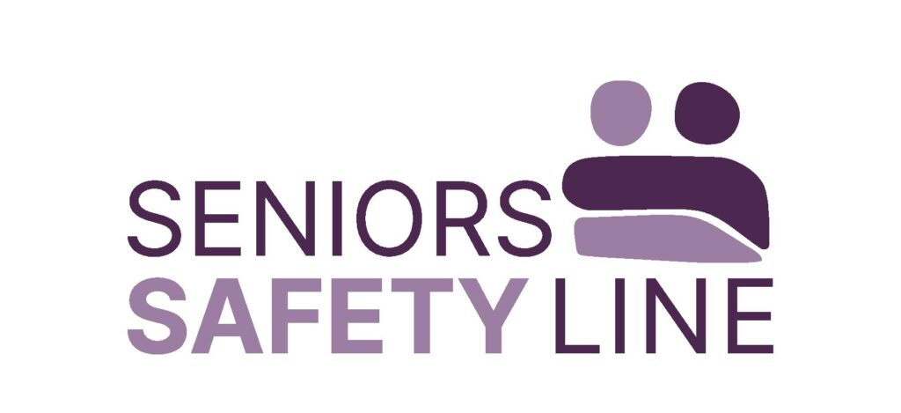

Delivering on our Promise:
A Safer Future for
Women and Seniors
Strategic Plan | 2023 – 2028
Foreword
The COVID-19 pandemic has brought unprecedented challenges to our society. Among them lies a disturbing increase in gender-based violence and elder abuse. As the world grapples with the lingering impacts of the pandemic, it is clear that the need for support and resources for those affected by violence, abuse and neglect is more pressing than ever. According to recent reports, 1 in 6 older people is a victim of elder abuse, most often at the hands of a family member or trusted friend. Additionally, every other day, a woman or girl is killed somewhere in Canada.
The Assaulted Women’s Helpline (AWHL) has been a vital resource for those in need for many years, providing support and resources to those who have experienced violence and abuse as well as abusers, concerned friends, colleagues and family members. During our consultations, we heard from many callers for whom AWHL had been a vital lifeline - connecting them with social services, providing a compassionate ear or helping them to craft personalized safety plans. We also heard that we need to modernize and evolve.
This strategic plan is a crucial step in that direction, outlining a vision for a more inclusive and effective organization that addresses the immediate and increasingly complex needs of those affected by violence and the systemic issues that fuel it. Despite awareness-raising, community mobilization and calls to action across the sector - “the shadow pandemics” persist, exacerbated by multiple forms of intersecting oppression and marginalization. In fact, Canada remains the only G7 country without a national gender-based violence hotline. By tackling these issues head-on and working to create a more equitable society, we can make a real difference in the lives of those affected by violence and abuse.
We recognize that this is not a problem that can be solved by us alone. We must work with partners across the sector, academia, community organizations and government to create a coordinated response that addresses the root causes of violence and abuse.
Together, we can create a future where everyone can live free from violence and we will play a critical role in making that a reality.
To this end, we are thrilled to unveil the three strategic priorities guiding our work from 2023 to 2028:
Huong Pham
Executive Director
Sheila Phillips
Chair, Board of Directors
At a Glance
AWHL was established in 1985 as a response to the growing need for a dedicated support system for women facing violence. With full funding from the Ontario Ministry of Community and Social Services, AWHL became the first telephone crisis service of its kind in the province.
Since then, AWHL has expanded to provide confidential services to women and seniors who have experienced or are experiencing abuse or violence. These services include crisis counselling, safety planning, emotional support, information and referrals. Our goal is to empower women and seniors with the information and support they need to make informed decisions and connect them to vital resources. Additionally, we are committed to educating the community on issues of abuse through information, outreach, and training.
AWHL is dedicated to providing a safe and supportive environment for women and seniors who have been impacted by violence. Our services are confidential and available 24/7, ensuring that help is always available when it is needed the most.
With this strategic plan, we will build upon our rich history and continue to serve those in need with compassion, care and commitment.
Our Planning Process
In August 2022, AWHL’s Strategic Planning Committee initiated a planning process to renew the foundational statements, determine our long-term direction and identify strategic priorities to guide the organization over the next 3 years.
- Online surveys;
- Interviews and focus groups with individuals and key stakeholders inside and outside of the organization;
- A review of internal documents and a selection of recent literature; and
- External research conducted by the consultants.
In January 2023, AWHL’s Board of Directors and staff participated in a strategic planning session to:
- Confirm refreshed foundational statements; and
- Develop strategic priorities to guide the organization over the next 3 years.
The draft strategic plan was written in February and was approved by the Board of Directors in March 2023. Over the spring, we developed an Implementation Plan to guide us in driving our mission and achieving our strategic priorities.
AWHL is dedicated to providing a safe and supportive environment for women and seniors who have been impacted by violence. Our services are confidential and available 24/7, ensuring that help is always available when it is needed the most.
With this strategic plan, we will build upon our rich history and continue to serve those in need with compassion, care and commitment.
Redefining our Mission
With this plan, we are reinvigorated with purpose and we stand ready to work together to create a safer, more inclusive future for all.
Vision
Women and seniors live free of gender-based violence and elder abuse.
Mission
To support, counsel, inform and advocate for women and seniors who have experienced or are experiencing gender-based violence and elder abuse. AWHL’s professional counsellors offer free, confidential, compassionate, culturally-safe support, crisis intervention information, education, outreach and referral services in over 200 languages, 24/7, 365 days a year by phone, TTY, chat, text and online.
Values
The following core values inform our work to respond to
gender-based violence and elder abuse.
We place the voices, experiences and needs of marginalized women and seniors at the centre of our work and focus on the most vulnerable.
We believe in the power of compassion, empathy, respect and care to help service users deal with the impacts of abuse and improve their lives.
We work to support, educate and empower women and seniors with the information, supports, services and options they need to build on their strengths and make their own decisions.
We recognize the complexity and impacts of trauma on service users’ and staff’s lives and strive to reduce re-traumatization and promote healing.
We offer services through an anti-racist, anti-oppressive, feminist framework. We aim to break down barriers that prevent marginalized women and seniors who have experienced or are experiencing violence from accessing services. We promote accessibility through inclusive design and data-driven advocacy.
Priority I
Priority II
Priority III
Strategic Priorities
Three strategic priorities focus our efforts, designed to fulfil our mission and to engage our organization in the wider vision.
Priority I
Scale and Evolve
We are committed to dismantling barriers for service users to access resources and support. Through broader and stronger partnerships, we can better actualize our commitment to anti-racism and anti-oppression by building out specific service offerings and collaborations to meet the unique needs of the most marginalized. Through greater outreach and awareness-raising efforts, we will expand the reach and visibility of our services, including the Seniors Safety Line, to diverse communities. Through technological innovation, service users will access much-needed support and services when they need them – in the way that makes the most sense. Lastly, we will explore opportunities to foster greater collaboration with helplines outside the province.
Objectives
We understand how critical cultural safety is to ensure services are relevant and equitable. We will explore collaboration, with existing and potential new partners, that support at-risk, vulnerable, and marginalized communities of women, seniors, and gender-diverse people we serve.
Through collaborations, knowledge transfer and exchange, and new sectoral partnerships, we will build a deeper awareness of our service offerings more broadly across diverse communities. In addition, these partnerships will strengthen our own knowledge and understanding, enhancing our service responsiveness and the cultural relevancy of what we do.
We are improving access to our services across traditional, digital and mobile channels to ensure that we communicate with service users where and how they prefer and provide innovative, high-quality, confidential services. This will be done in a way that promotes equity and inclusion, especially for the most marginalized and underserved communities. We are also redoubling efforts to scale up and promote the Seniors Safety Line and integrate it with AWHL’s existing offerings.
For over three decades, callers across Ontario have been reaching out to us for the support they need. In recent years, we have observed a surge in calls overall and a deluge of calls coming from outside the province. This means that regrettably, some callers are not able to connect with us on their first try. Canada is the only country in the G7 that does not have a national line. For callers in crisis, navigating the patchwork of territorial, provincial helplines and shelter crisis lines can be challenging. We will work with other crisis lines across the country to evaluate the potential for establishing partnerships that would ensure that callers are able to quickly and easily access the relevant supports they need.
Priority II
Foster sustainability and invest in internal infrastructure
Achieving our goals will require us to be stable, efficient, flexible and responsive. To do this and actualize our mission, we will need to review our structure to ensure that we have the right mix of talent in the right places. We will also need increased, predictable funding for operations and programming. This will require us to transform our revenue model to diversify our funding base while continuing to engage and grow our current contingent of supporters. We will design and implement a resource development strategy and website refresh that will allow AWHL to clearly articulate our work to all stakeholders and highlight our expanded women and senior-centred mission. Lastly, we will invest in modernizing and upgrading our IT infrastructure and establish a systematic approach to managing change.
Objectives
We will enhance the skills, knowledge, and overall capabilities of our staff to ensure high performance and contribute to the growth and success of the organization. We will also review our organizational structure and job descriptions to ensure clarity and align them to the level of skill, knowledge and experience required to perform at a high level. We will also develop tools, guides and manuals to facilitate onboarding and continuous learning. We will build a strong organizational culture that fosters trust, transparency and accountability and that reflects the communities we serve.
Through collaborations, knowledge transfer and exchange, and new sectoral partnerships, we will build a deeper awareness of our service offerings more broadly across diverse communities. In addition, these partnerships will strengthen our own knowledge and understanding, enhancing our service responsiveness and the cultural relevancy of what we do.
This approach will take into consideration our core values, ensuring that fundraising efforts align with our mission and vision. By taking a values-based approach to resource development, we will increase revenue and foster stronger relationships with our stakeholders and donors. To diversify funding sources, we will need to secure financial support from a broader range of entities through calls for proposals, corporate sponsors, individuals, donations and special events.
Through a website refresh, we can ensure that we are communicating our value proposition to the right audiences and aligning with our strategic directions. Doing so will be instrumental in ensuring our resilience and creating a sustainable source of income to support our growth and impact for years to come.
We are investing in tools and technology that support productivity, equip us to effectively deliver our services and meet the evolving needs of our service users. By identifying and implementing technology solutions, we can streamline processes, improve communication and collaboration and enhance our overall ability to deliver high-quality, relevant services. This objective prioritizes investment in technology as a means to drive efficiency and improve our reach. By strengthening and building on our existing multi-modality approach, we can leverage technology to be more dynamic and responsive to the needs of our stakeholders.
Priority III
Champion Change
In recent years, the sector has faced unprecedented demand for services and an increase in the severity and complexity of cases. This is compounded by a lack of shelter space, a lack of affordable housing and a lack of free and affordable services. AWHL, through the rich data we collect from service users, will play a significant role in assisting movement builders, policymakers and researchers working towards systemic change to respond to gender-based violence and elder abuse across the country.
Objectives
AWHL will develop a strategy that identifies key issues and priorities for our advocacy to respond to gender-based violence and elder abuse. We will collect and analyze data to identify trends and patterns, collaborate with experts and organizations to produce in-depth insights into the selected issues and communicate and disseminate strategic information and reports based on the evidence we have generated to drive meaningful change within the organization and beyond.
We will build our government relations capacity to ensure that we have strong relationships and connections with key stakeholders and that we have deep knowledge of how to meaningfully engage – especially at provincial and federal levels. This will be done through regular engagement with government agencies and elected officials, and joint advocacy with actors in the sector. Our goal is to amplify the voices and share the needs and experiences of those we serve with policy and decision-makers – to help them better understand the issues.
AWHL makes a vital contribution to the sector and yet, because our service users are anonymous and largely invisible to both us and the public at-large, the unique role we play is not always readily understood. We will build upon existing frameworks to monitor, evaluate and learn about how we can be more effective and use data and evidence to underscore our value and the critical position we hold in the continuum of services to address gender-based violence and elder abuse.
Thank You
We would like to thank all the stakeholders who generously gave their time and energy to help us chart a future course for AWHL’s evolution. We especially acknowledge the service users who participated in this process for your insightful contributions – your ideas and opinions were incredibly valuable to the process and your strength and resilience are constant reminders of why we do this work.
The Strategic Planning Committee led the planning process under a mandate from AWHL’s Board of Directors and with support from There Management Consulting Inc. This work was made possible because of the committee’s immense dedication and unwavering support of the process.
We want to express our heartfelt gratitude to our entire staff and leadership team. This team has demonstrated an unwavering commitment to the essential work we do and an ability to adapt to the most challenging conditions. We are exceptionally lucky to have you!
Lastly, we want to acknowledge and thank our allies, donors, volunteers, partners and our funders: Canadian Women’s Foundation; Ontario Trillium Foundation; Ministry of Children, Community and Social Services (MCCSS) and; Ministry of Seniors and Accessibility (MSAA). Your generous and consistent support is the backbone of our efforts. We simply cannot do this without you.